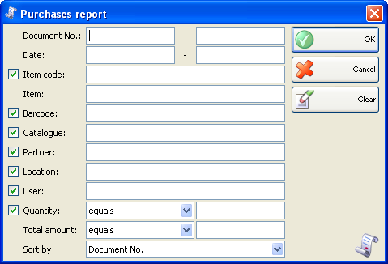
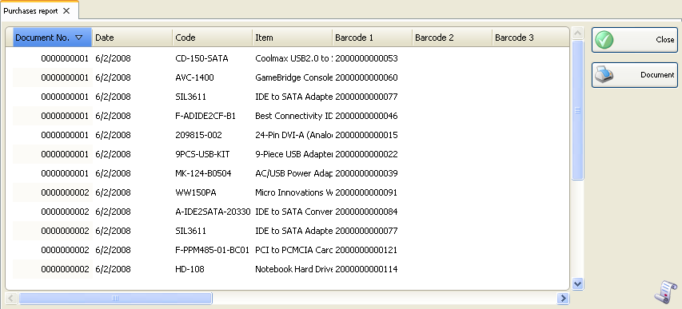

Raport achizitii
Raportul achizitii afiseaza in ordine cronologica documentele de achizitii, pentru care nu s-au efectuat operatii matematice sau de grupare. Aceste documente vor fi afisate fiecare pe un rand, Puteti folosi acest raport pentru a urmari datele actuale de intrari pe articole, documente, utilizatori, date, etc.� Fiecare rand din documente corespunde unui rand din raport.
In prima fereastra a raportului se pot specifica criteriile de filtrare si campurile care se vor vizualiza.
Numai randurile bifate se vor vizualiza in raport.

Se pot allege filtrari pentru fiecare camp prin apasarea tastei� F4.
Se poate limita raportul la un singur criteriu de filtrare � de exemplu, achizitii pentru un singur articol sau se pot aplica mai multe criterii de filtrare in acelasi timp � de exemplu, vizualizare achizitii de la un anumit partener de la o anumita localizare pentru un anumit articol si o anumita perioada de timp.
Pentru stergerea filtrarilor specificate, click pe butonul Clear. In aceasta situatie raportul va afisa toate operatiile fara nici o restrictie.
Click pe butonul OK pentru a genera raportul dupa specificarea criteriilor de filtrare. Click pe butonul Cancel pentru inchiderea ferestrei.

�2006-2012 Microinvest, All rights reserved